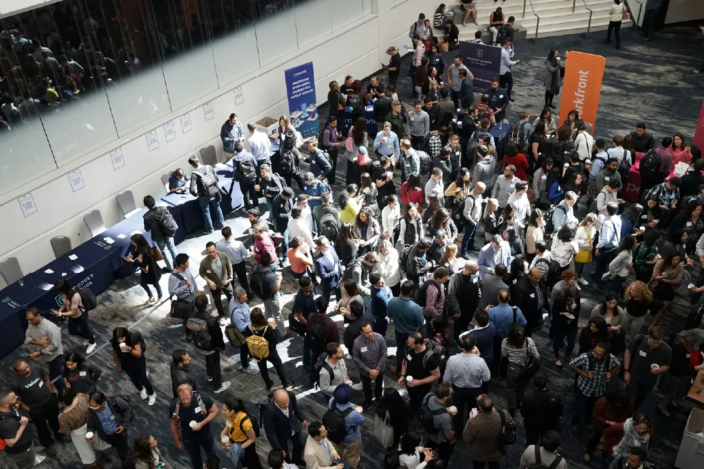

News.
最新消息
2016中國國際紡織機械展覽會暨ITMA亞洲展覽會回顧2016/07/26

本屆展會是「中國國際紡織機械展覽會」和「ITMA亞洲展」兩大國際品牌展會第五次聯袂在中國舉辦，由中國國際貿易促進委員會紡織業分會、中國紡織機械協會、中國國際展覽中心集團公司與歐洲紡織機械製造商委員會共同主辦，並由北京泰格斯特國際展覽展示有限公司承辦，新加坡國際展會策劃公司協辦。共有來自28個國家、地區1,673家企業參展，參展企業數量較去年同期成長了7%；展出面積超過17萬平方米，較去年同期成長12%。無論從展商數量或展出面積來說，本屆紡機展無疑是聯合辦展以來規模最大的一屆。
本屆聯合展啟用國家會展中心（上海）的6個館，分別是H1至H3三個單層館；H4.1至H6.1三個雙層館的一層展館。H1館匯集了17個國家與地區的紡紗機械企業；H2館匯集了14個國家與地區的紡紗機械、化纖機械與非織造機械企業；H3館匯集了15個國家與地區的織造機械企業；H4.1館匯集了11個國家與地區的針織機械紡紗企業；H5.1館匯集了23個國家與地區的紡織儀器、服裝機械與印花機械企業；H6.1館匯集了15個國家與地區的印染機械企業。
從參展企業的國家和地區情況來看，中國大陸參展企業的展出面積佔全部展出面積的69.4%，位居首位。面積排名第二的是德國（約佔總面積的6.5%），其次為義大利（5.5%）、日本（4.7%）和瑞士（3.2%）。